1. Introduction:
Coxtp is an R package for fitting penalized Newton’s
method for the time-varying effects model using mAIC, TIC, GIC as
information criteria, in particular we span the parameter using basis
functions. Utilities for carrying out post-fitting visualization,
summarization, and inference are also provided.
2. Installation:
#Install the package, need to install the devtools packages:
install.packages("devtools")
devtools::install_github("UM-KevinHe/surtvep")
#To install with Vignettes:
install.packages("devtools")
devtools::install_github("UM-KevinHe/surtvep",build_vignettes =T)3. Dataset preperation:
For the purpose of demonstration, we will use the simulated dataset “sim_data” in the our package.
sim_data=sim_dataLet’s check the data first:
head(sim_data)
#> V1 V2 event time
#> [1,] 0 0 1 0.0003028248
#> [2,] 0 0 1 0.0004273569
#> [3,] 0 0 0 0.0008948164
#> [4,] 0 0 1 0.0008981023
#> [5,] 0 0 0 0.0009103830
#> [6,] 0 0 1 0.0010759157Here, the covariates V1 and V2 were generated as binary variables with around 90% frequency. The related true log-hazard function for each variable is \(\beta(t)=1\) and \(\beta(t)=exp(-1.5*t)\), where t denotes time.
Then, let’s extract the time and event as vector, and get the remaining information in the dataset as matrix.
4. Model fitting
4.1 Newton Method without penalization:
4.1.1 Simple fitting:
Let’s fit the model. Here, the default method is Newton Method
without penalization, with smooth-spline. Term
lambda_spline refers to the smoothing parameter lambda
(Detail could be found under both “Model parameter” section or our paper
here(Modified this to XuTao’s site after finished). Default value is
lambda_spline=0, which refers to no penalization). The
number of knots in the base function here is the default which is
nsplines=8
fit <- coxtp(event = event, z = data, time = time)To get the estimated time-varying effect of a specific coefficient, we could use the following plot function in our package:
coxtp.plot(fit,coef="V2")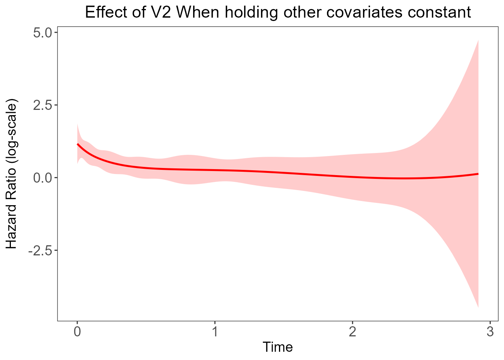
The plot shows the result of the time-varying effect of Variable “V2”.
4.1.2 Detailed calculations and theories.
4.1.2.1 Model results meanings:
First, Let’s look at the fit result
summary(fit)
#> Length Class Mode
#> model_result 18 -none- list
#> lambda.selected 1 data.frame list
#> p 1 -none- numeric
#> z_names 2 -none- characterThere are 4 results saved under the fit result.
model_resultsave the detailed model results which we will explain in a minute.lambda.selectedsaved the best lambda chosen based on different criteria which will not be used for the non-penalized model.prefers to the number of covariates used in the modelz_namesrecords the covariates names.
The detailed model result was saved in model_result,
which can be called by fit$model_result. Now, let’s explore
the result a little bit:
summary(fit$model_result)
#> Length Class Mode
#> theta 16 -none- numeric
#> logplkd 1 -none- numeric
#> theta_all 16 -none- numeric
#> theta_list 3 -none- list
#> AIC_all 1 -none- numeric
#> TIC_all 1 -none- numeric
#> TIC2_all 1 -none- numeric
#> GIC_all 1 -none- numeric
#> AIC_trace 1 -none- numeric
#> TIC_trace 1 -none- numeric
#> TIC2_trace 1 -none- numeric
#> GIC_trace 1 -none- numeric
#> logplkd_vec 1 -none- numeric
#> SplineType 1 -none- character
#> VarianceMatrix 256 -none- numeric
#> uniqfailtimes 2487 -none- numeric
#> bases 19896 bs numeric
#> knots 4 -none- numericHere we noticed that there are 18 items in the model results list. Following is an explanation of each item:
-
theta: Estimation matrix of \(\theta\) -
logplkd: log-partial likelihood -
theta_all: Internal validation use -
theta_list: The estimation matrix at each Newton’s update -
AIC_all: Akakia information criterion -
TIC_all: Takeuchi information criterion -
TIC2_all: Internal validation use -
GIC_all: Generalized information criterion -
AIC_trace: Internal validation use -
TIC_trace: Internal validation use -
TIC2_trace: Internal validation use -
GIC_trace: Internal validation use -
logplkd_vec: log-partial likelihood at each iteration -
SplineType: spline used for fitting the model -
VarianceMatrix: Variance Matrix -
uniqfailtimes: The input unique event times ifties="Breslow", input time points ifties="None"(Add link) -
bases: The basis function used for estimating time-varying effects -
knots: Number of basis functions used for estimating time-varying effects
4.1.2.2: How to get the effect of a specific time point?
We are more interested in estimating time-varying effect of the covariates. Following is an simple tutorial of how to do that. First, a little background about the time-varying effect in cox model(You could also check this part at our paper which have more detailed explanation.(insert link))
If we Let \(X_i=(X_{i1},X_{i2},...X_{ip})^T\) refers to the \(i_{th}\) individuals in the dataset with p covariates(which could also be understand as the \(i_{th}\) row in the data we extract above). Let \(\lambda(t|X_i)\) denote the hazard of having the event at time t for the \(i_{th}\) individual, \(\lambda_0(t)\) denote the hazard of having the event at time 0. When we considering the covarites having time fixed effect, we have the following formula for \(\lambda(t|X_i)\):
\(\lambda(t|X_i)=\lambda_0(t)exp(X_i^T\beta)\)
Where \(\beta\) refers to the coefficients where \(\beta=(\beta_1,\beta_2,...\beta_p)\), which in this example, is (V1, V2). Which have similar format as the GLM model. For time-varying effect model, we are simply replace \(\beta\) with a set of \(\beta(t)\). Thus, the time varying equations could be transferred as following:
\(\lambda(t|X_i)=\lambda_0(t)exp(X_i^T\beta(t))\)
Similar, \(\beta(t)=(\beta_1(t),\beta_2(t),...\beta_p(t))\) where \(\beta(.)\) refers to a set of cubic B-spline(Details for B-spline refers to here : insert link). Where, the single \(\beta_p(t)\) could be estimated using the following formula:
\(\beta_p(t)=\theta_p^TB(t)=\sum_{k=1}^K\theta_{pk}B_k(t)\)
Here, K refers to the given number of knots.
Thus, to calculate the time varying effect of coefficient p, we just
need to get both estimated B spline and the \(\theta\) matrix. The B-spline was saved in
model_result$bases and \(\theta\) matrix was saved in the last item
in model_result$theta_list Following is the code for
calculation:
model_result = fit$model_result
B.spline = as.matrix(model_result$bases)
theta = model_result$theta_list[[length(model_result$theta_list)]]
beta = B.spline %*% t(theta)
dim(beta)
#> [1] 2487 2
head(beta)
#> [,1] [,2]
#> [1,] 0.4574157 1.165634
#> [2,] 0.4593697 1.165002
#> [3,] 0.4667205 1.162619
#> [4,] 0.4694825 1.161720
#> [5,] 0.4751800 1.159862
#> [6,] 0.4809900 1.157959As a result, \(\beta\) is a 2487*2 matrix(we are using the “Breslow” ties, thus there are 2487 rows instead of 5000, detail about ties and Breslow ties could refers to here(insert link)). We could also get the 95%CI for the estimation, which is calculates as below:
B.spline <- as.matrix(model_result$bases)
theta_plot <- model_result$theta_list[[length(model_result$theta_list)]]
beta <- B.spline%*%t(theta_plot)
var <- model_result$VarianceMatrix
colnames(beta)=fit$z_names
p <- fit$p
knot <- dim(B.spline)[2]
list <- 1:dim(B.spline)[1]
beta_low <- matrix(0,dim(B.spline)[1],p)
beta_up <- matrix(0,dim(B.spline)[1],p)
for(i in 1:p){
beta_t_1 <- beta[,i]
var2 <- var[((i-1)*knot+1):((i-1)*knot+knot),((i-1)*knot+1):((i-1)*knot+knot)]
temp <- 1.96*sqrt(vapply(list, function(x) matrix(B.spline[x,],1,knot)%*%var2%*%t(matrix(B.spline[x,],1,knot)),FUN.VALUE=numeric(1)))
low <- beta_t_1-temp
up <- beta_t_1+temp
beta_low[,i] <- low
beta_up[,i] <- up
}
colnames(beta_low) <- paste0(fit$z_names,"_low")
colnames(beta_up) <- paste0(fit$z_names,"_up")
head(beta_low)
#> V1_low V2_low
#> [1,] -0.3067298 0.4644817
#> [2,] -0.3023110 0.4662445
#> [3,] -0.2857054 0.4728474
#> [4,] -0.2794734 0.4753164
#> [5,] -0.2666307 0.4803885
#> [6,] -0.2535532 0.4855309
head(beta_up)
#> V1_up V2_up
#> [1,] 1.221561 1.866786
#> [2,] 1.221050 1.863760
#> [3,] 1.219146 1.852390
#> [4,] 1.218438 1.848125
#> [5,] 1.216991 1.839335
#> [6,] 1.215533 1.830388matrix beta_low records all the lower bound of beta and
beta_up records all the upper bound of beta.
As a result, we could plot the effect by ourselves:
beta <- as.data.frame(beta)
beta <- cbind(beta, beta_low, beta_up)
y=beta$V2
ymin=beta$V2_low
ymax=beta$V2_up
time=model_result$uniqfailtimes
ggplot(data=beta, aes(x=time)) +
geom_line(aes(y= y),size = 0.9,color = 'red') +
geom_ribbon(aes(ymin = ymin, ymax = ymax), fill="red", alpha = 0.2) +
scale_y_continuous(name='Hazard Ratio (log-scale)') +
theme_bw() + theme(plot.title = element_text(hjust = 0.5)) +
theme(panel.grid.major = element_blank(),panel.grid.minor = element_blank()) +
theme(text= element_text(size=14)) + theme(axis.text= element_text(size=14)) +
theme(axis.title.y = element_text(margin= margin(t=0, r=10, b=0, l=0))) +labs(x="Time") +
ggtitle(paste0("Effect of V2 When holding other covariates constant"))4.2 Newton Method with penalization:
We use the smooth spline here for penalization(default). You could
also use spline="P-spline". For lambda_spline, you could
either enter a numeric number(must be an integer) or a vector of
numbers. If lambda_spline was entered as a vector of
numbers, the best lambda was selected based on different criteria(AIC,
TIC or GIC). If lambda_spline was entered as a single
number, the model result format was kind of similar as the 4.1, the
model result could be called by model_result. Following is
a model fit with the lambda_spline as a vector for
different illustration purposes:
time=sim_data[,"time"]
lambda_spline_all=c(0.001,0.01,0.1,1,10,100,1000)
fit_penalized <- coxtp(event = event, z = data, time = time,lambda_spline=lambda_spline_all)The optimal lambda was saved in the model term
lambda.selected
best_lambda=fit_penalized$lambda.selected
best_lambda
#> value
#> AIC 1000
#> TIC 100
#> GIC 1000From the result above, we noticed that with different selection
criteria, the best lambda selected is quite different. Here, we use the
AIC criteria which set lambda=1000. The result for this
model was saved in related criteria model and could be called as
below:
AIC_model = fit_penalized$model.AIC
summary(AIC_model)
#> Length Class Mode
#> theta 16 -none- numeric
#> logplkd 1 -none- numeric
#> theta_all 16 -none- numeric
#> theta_list 3 -none- list
#> AIC_all 1 -none- numeric
#> TIC_all 1 -none- numeric
#> TIC2_all 1 -none- numeric
#> GIC_all 1 -none- numeric
#> AIC_trace 1 -none- numeric
#> TIC_trace 1 -none- numeric
#> TIC2_trace 1 -none- numeric
#> GIC_trace 1 -none- numeric
#> logplkd_vec 1 -none- numeric
#> SplineType 1 -none- character
#> VarianceMatrix 256 -none- numeric
#> uniqfailtimes 2487 -none- numeric
#> bases 19896 bs numeric
#> knots 4 -none- numericWe could also directly draw the plot using the following command:
library(cowplot)
x=seq(0,3,length.out=sum(event==1))
y1=1
y2=exp(-1.5*x)
p1=coxtp.plot(fit_penalized,IC="AIC",coef="V1") +
ggtitle("Penalized NR") + geom_line(aes(x=x,y=y1))
p2=coxtp.plot(fit,IC="AIC",coef="V1") +
ggtitle("Non-Penalized NR")+ geom_line(aes(x=x,y=y1))
plot_grid(p1,p2)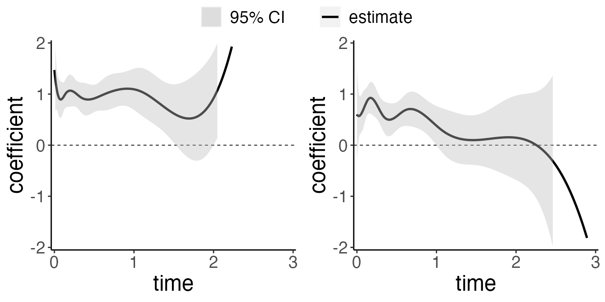
Compare with the non-penalized Model, we could see that the effect of “V1” was shrink to roughly linear in the penalized model.
The detail calculation of B-spline matrix, \(\theta\) matrix and \(\beta\) matrix was similar as that illustrate as 4.1.2.2.
5. Other information
5.1 Backtracking Linesearch
In our packages, we provide 3 options for backtracking
linesearch(btr). The usual way of backtracking linesearch
is with Newton Increment(Detailed information could be found here).
However, When binary predictors with extremely low frequency are
present, the calculation of the second-order derivative has some issues.
In that case, the Newton increment presents extreme values, leading to a
huge bias. We provided a way of limiting the step size in such cases.
Instead of using the Newton increment, we use a fixed value of 1. This
method is referred to as “static” in our function which is
the default setting. Besides this, btr="none" refers to no
backtracking, and btr="dynamic" refers to backtracking
linesearch with Newton Increment.
# For no backtracking linesearch:
t1=bench::mark(coxtp(event = event, z = data,
time = time,lambda_spline=1000,btr="none"))
#For static backtracking linesearch:
t2=bench::mark(coxtp(event = event, z = data,
time = time,lambda_spline=1000,btr="static"))
#For dynamic backtracking linesearch:
t3= bench::mark(coxtp(event = event, z = data,
time = time,lambda_spline=1000,btr="dynamic"))
t=rbind(t1,t2,t3)
t[,1]=c("none","static","dynamic")
t
#> # A tibble: 3 x 6
#> expression min median `itr/sec` mem_alloc `gc/sec`
#> <chr> <bch:tm> <bch:tm> <dbl> <bch:byt> <dbl>
#> 1 none 1.81s 1.81s 0.551 50.8MB 0.551
#> 2 static 4.64s 4.64s 0.215 51.6MB 0.215
#> 3 dynamic 10.24s 10.24s 0.0977 52.8MB 0.0977Compared to dynamic and static, no backtracking linesearch gives the optimal programming time. Following is the performance of each method:
time_list=c()
x=seq(0,3,length.out=sum(event==1))
y1=1
y2=exp(-1.5*x)
for(btr in c("none","dynamic","static")){
fit=coxtp(event = event, z = data, time = time,lambda_spline=1000,btr=btr)
for(v in c("V1","V2")){
plot=coxtp.plot(fit,IC="AIC",coef=v,ylab="HR(log-scale)")+
theme(text = element_text(size = 10),
axis.text.x = element_text(size = 8),
axis.text.y=element_text(size = 8)) +
ggtitle(v)
if(v=="V1"){
plot=plot + geom_line(aes(x=x,y=y1))
} else {
plot=plot + geom_line(aes(x=x,y=y2))
}
assign(paste0("plot",v,"_",btr),plot)
}
}
library(cowplot)
##Plot v1
title <- ggdraw() +
draw_label(
"Backtracking comparsion",
fontface = 'bold',
x = 0,
hjust = 0,
size=15
) +
theme(
plot.margin = margin(0, 0, 0, 7)
)
p1=plot_grid(plotV1_none,plotV2_none,ncol=2)
p2=plot_grid(plotV1_dynamic,plotV2_dynamic,ncol=2)
p3=plot_grid(plotV1_static,plotV2_static,ncol=2)
plot_grid(title,p1,p2,p3,ncol=1,labels=c("","None","Dynamic","Static"),rel_heights = c(0.1,1,1,1),label_size = 13)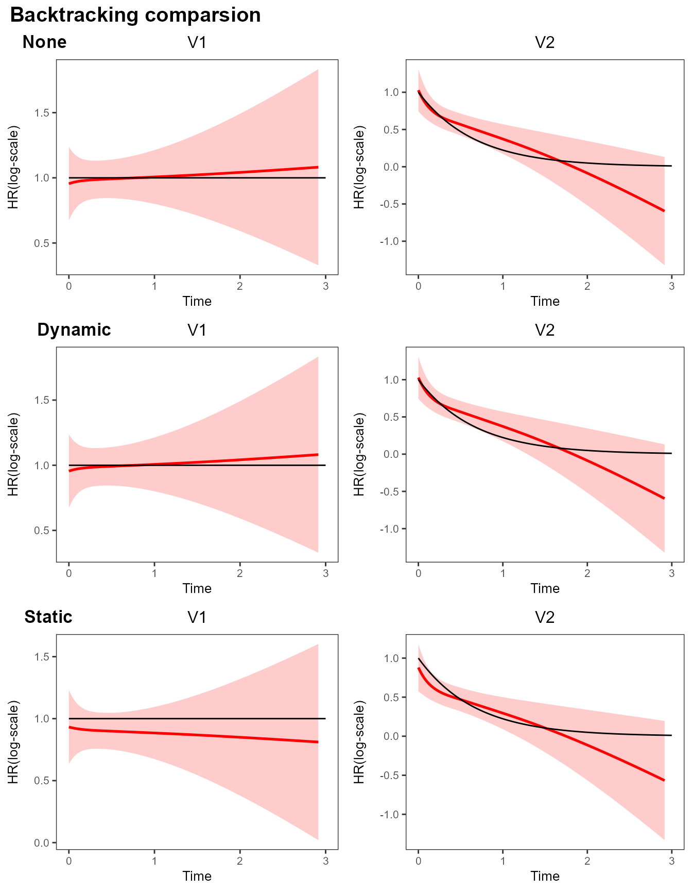
5.2 Stopping criteria
There are 4 parameters could be defined in the stopping criteria, Convergence threshold(tol ), Maximum Iteration number(iter.max), Stopping rule(stop), and number of steps(fixedstep). Detailed information about stopping criteria selection could be viewed here(add link). Following is the default setting
coxtp(...,tol=1e-6,iter.max=20L,stop="ratch",fixedstep=FALSE)
5.3 Baseline estimation
The Nelson-Aalen estimator (Breslow estimator) of the culmulative function is given by \(\widetilde{\Lambda}(t) = \int_0^t \widetilde{\Lambda}_0(u)\), where \(\widetilde{\Lambda}(t)\) is 0 except at the observed failure times \(t_i\), where it takes the value \[\begin{align*} d\Lambda_0 = {d_i}\left\{\mathop{\sum}\limits_{\ell \in R(T_i)} \exp \{\boldsymbol{X}_{i' }^T \boldsymbol{\Theta} \boldsymbol{B}(T_{i}) \}\right\}^{-1}. \end{align*}\]
The baseline estimation here refers to the baseline hazard at time t
when holding all the covariates equals to zero. We use the model fitted
result fit_penalized in section 4.2.
event=sim_data[,"event"]
time=sim_data[,"time"]
data=sim_data[,!colnames(sim_data) %in% c("event","time")]
model1 = fit_penalized$model.AIC
##baseline
plotdata=coxtp.baseline(fit=model1, delta=event,z=data,time=time)
head(plotdata)
#> unique.time. lambda Lambda
#> 1 0.0003028248 0.0001609517 0.0001609517
#> 2 0.0004273569 0.0001609879 0.0003219395
#> 3 0.0008948164 0.0000000000 0.0003219395
#> 4 0.0008981023 0.0001610787 0.0004830182
#> 5 0.0009103830 0.0000000000 0.0004830182
#> 6 0.0010759157 0.0001611453 0.0006441635Let’s check the result of baseline function first. The function returned a dataset containing the baseline estimation including 3 variables:
-
unique.time.: The unique time listed in the original dataset used to fit the model -
lambda: refers to \(\lambda_0(t)\) in the model, which is baseline hazard -
Lambda: refers to the cumulative baseline hazard in the model.
Note that since our baseline estimation is based on Breslow Estimator, when there is no ties in the data, the baseline estimation could sometime results as 0 since there is no death at certain time-point. Thus, if we directly draw the plot, it would be something like this:
#Exclude censoring points
baseline_plot<-ggplot(plotdata,aes(x=unique.time., y=lambda)) + geom_line(size = 0.6) +
scale_x_continuous(name='Years since diagnosis', limits=c(0,3), breaks=c(0,1,2,3)) +
scale_y_continuous(name='baseline hazard', limits=c(0,0.1)) +
ggtitle(" Baseline Hazard by time") +
theme(plot.title = element_text(hjust = 0.5))
baseline_plot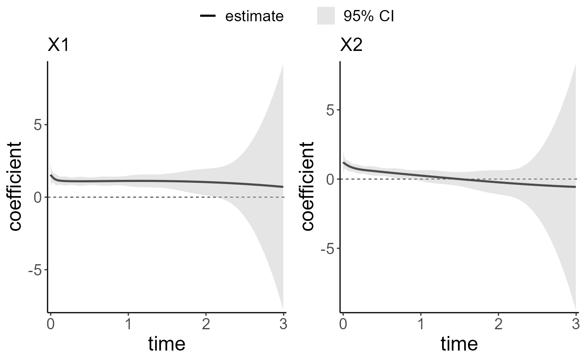
As a result, we could either increase the time interval to make ties exists or remove the points that have \(\lambda=0\). The only differences would result in the baseline hazard, there is no influence on the cumulative baseline hazard.
plotdata=plotdata[plotdata$lambda!=0,]Next, we are going to visualize the result using ggplot2
and cowplot function.
#Exclude censoring points
baseline_plot<-ggplot(plotdata,aes(x=unique.time., y=lambda)) + geom_line(size = 0.6) +
scale_x_continuous(name='Years since diagnosis', limits=c(0,3), breaks=c(0,1,2,3)) +
scale_y_continuous(name='baseline hazard', limits=c(0,0.1)) +
ggtitle(" Baseline Hazard by time") +
theme(plot.title = element_text(hjust = 0.5))
cum_plot<-ggplot(plotdata,aes(x=unique.time., y=Lambda)) + geom_line(size = 0.6) +
scale_x_continuous(name='Years since diagnosis', limits=c(0,3), breaks=c(0,1,2,3)) +
scale_y_continuous(name='Cumulative baseline hazard') +
ggtitle("Cumulative Baseline Hazard by time") +
theme(plot.title = element_text(hjust = 0.5))
plot_grid(baseline_plot,cum_plot,ncol = 2)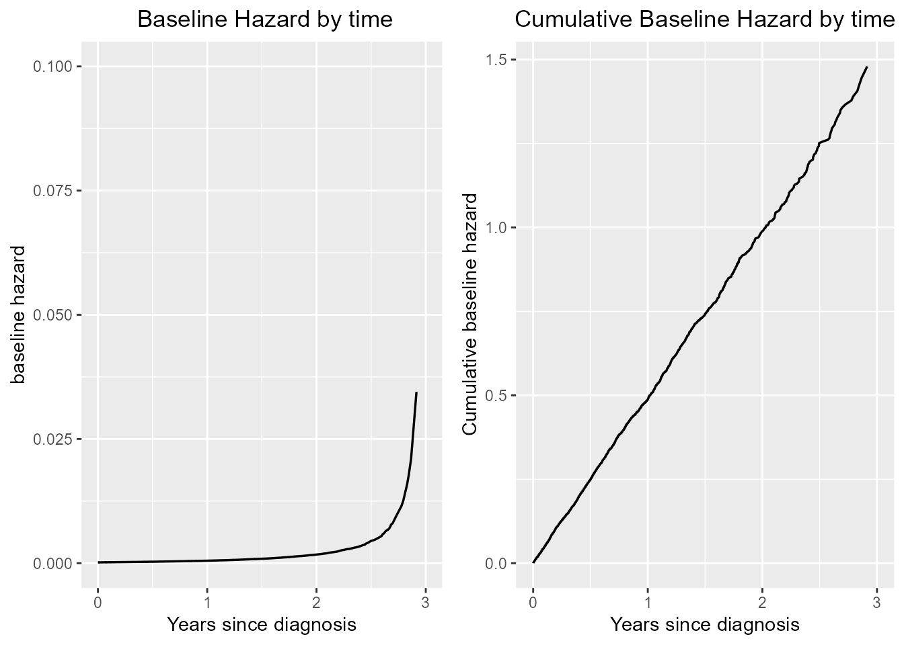
One use of Cumulative baseline hazard is to calculate the survival function where cumulative hazard is the negative log of the survival probabilities. If we assume cumulative baseline hazard function as \(S(t)\) and cumulative hazard function as \(H(t)\), then we have \(H(t)=-log(S(t))\). Thus, we could plot the survival function as follows:
plotdata$survive=exp(-plotdata$Lambda)
ggplot(plotdata,aes(x=unique.time., y=survive)) + geom_line(size = 0.6) +
scale_x_continuous(name='Years since diagnosis', limits=c(0,3), breaks=c(0,1,2,3)) +
scale_y_continuous(name='Survival Function') +
ggtitle("Survival by time") +
theme(plot.title = element_text(hjust = 0.5))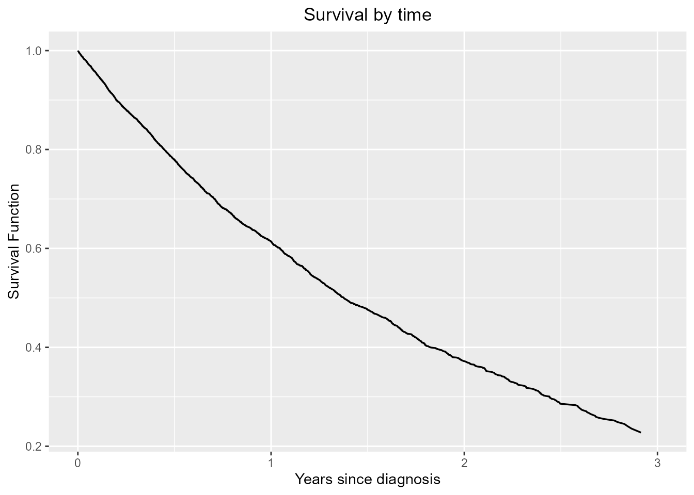
5.5 Stratification
To handle different stratification groups in the dataset, the
packages will use each facility as its own risk sets and finish the
estimation. To add strata in the model, simply use the
strata option. Following is an example:
Here, we are using the sim_data_p5_f5 as example.
sim_data_p5_f5=sim_data_p5_f5
head(sim_data_p5_f5)
#> V1 V2 V3 V4 V5 event time facility
#> [1,] 0 0 0 0 0 0 4.018354e-05 2
#> [2,] 0 0 1 1 1 1 2.103197e-04 2
#> [3,] 0 0 0 1 1 1 2.281676e-04 5
#> [4,] 0 0 0 0 1 1 4.334258e-04 3
#> [5,] 0 0 0 1 1 1 5.608086e-04 4
#> [6,] 1 0 0 0 0 1 5.623171e-04 1The dataset have 5 covariates, “V1” to “V5”, and a strata variable, “facility”. For this dataset, the true time-dependent function is
- V1: \(\beta(t)=1\)
- V2: \(\beta(t)=sin(3*\pi*t/4)\)
- V3: \(\beta(t)=-1\)
- V4: \(\beta(t)=(t/3)**2*exp(t/2)\)
- V5: \(\beta(t)=exp(-1.5*t)\)
Now, let’s fit the model by simply add one option
strata =facility. The black line in the plot refers to the
true function while the red line and area refers to the estimated
function and its 95% CI. Again, we assume the best
lambda_spline=1000
#Extract data
event_stra=sim_data_p5_f5[,"event"]
time_stra=sim_data_p5_f5[,"time"]
data_stra=sim_data_p5_f5[,!colnames(sim_data_p5_f5) %in% c("event","time","facility")]
facility=sim_data_p5_f5[,"facility"]
#select best lambda
# lambda_spline_all=c(0.001,0.01,0.1,1,10,100,1000)
# fit_stra<-coxtp(event=event_stra,z=data_stra,time=time_stra,strata =facility,lambda_spline=lambda_spline_all)
lambda_spline=1000
fit_stra<-coxtp(event=event_stra,z=data_stra,time=time_stra,strata =facility,lambda_spline=lambda_spline)Again, we use the coxtp.baseline function to get the
baseline estimation for different group. Just add the option
strata=facility to get specific facility data
library(dplyr)
model1 = fit_stra$model_result
baselinedata=coxtp.baseline(fit=model1, delta=event_stra,z=data_stra,time=time_stra,strata = facility)
baselinedata=baselinedata %>%
filter(lambda!=0) %>%
mutate(facility=as.character(strata))
baseline_plot<-ggplot(baselinedata,aes(x=unique.time_temp., y=lambda,group=facility)) + geom_line(size = 0.6,aes(color=facility)) +
scale_x_continuous(name='Years since diagnosis', limits=c(0,3), breaks=c(0,1,2,3)) +
scale_y_continuous(name='baseline hazard') +
ggtitle(" Baseline Hazard by time and facility") +
theme(plot.title = element_text(hjust = 0.5))
baseline_plot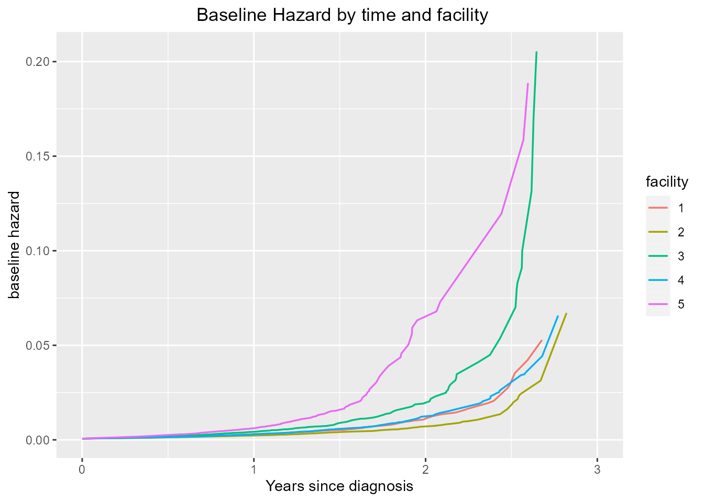
5.6 Model prediction:
5.6.1 Simple prediction
To predict the new data, we offered the function coxtp.predict. This
function could also be used to calculate absolute hazard. Suppose the
new data to be predicted is c(1,1,0,0,0) for
V1 to V5. For data with no stratification:
(Suppose we already have the best tuning parameter
lambda_spline selected).
sim_data=sim_data_p5
event=sim_data[,"event"]
time=sim_data[,"time"]
data=sim_data[,!colnames(sim_data) %in% c("event","time")]
lambda_spline=1000
fit_penalized <- coxtp(event = event, z = data, time = time,lambda_spline=lambda_spline)
model_result = fit_penalized$model_result
baseline=coxtp.baseline(fit=model_result, delta=event,z=data,time=time)
data_predict=c(1,1,0,0,0)
predict=coxtp.predict(model_result,baseline,newdata=data_predict)The result dataset predict is a dataset with predicted
hazard and time points in the orginal dataset. We could plot the data
using ggplot:
ggplot(predict,aes(x=unique.time.,y=lambda0_exp_betax)) +
geom_line(size = 0.6) +
scale_x_continuous(name='Years since diagnosis') +
scale_y_continuous(name='Predicted hazard') +
ggtitle("Predicted Hazard") +
theme(plot.title = element_text(hjust = 0.5))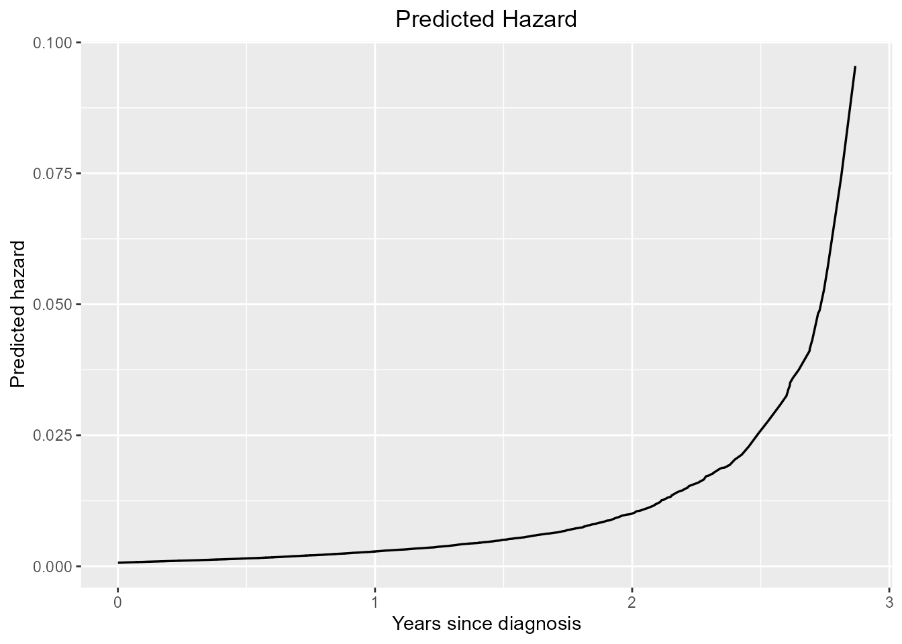
5.6.2 absolute hazard
If we want to calculate and show the difference of absolute hazard
for variable V2, we could use the
coxtp.predict to get it done. Assume that besides
V2, other covariate are all set to the reference level.
data_predict0=c(0,1,0,0,0)
predict0=coxtp.predict(model_result,baseline,newdata=data_predict0,strata = F)
data_predict1=c(0,0,0,0,0)
predict1=coxtp.predict(model_result,baseline,newdata=data_predict1,strata = F)
ggplot() +
geom_line(aes(x=predict0$unique.time.,y=predict0$lambda0_exp_betax,color="V2=0"),size = 0.6) +
geom_line(aes(x=predict1$unique.time.,y=predict1$lambda0_exp_betax,color="V2=1"),size = 0.6) +
scale_x_continuous(name='Years since diagnosis') +
scale_y_continuous(name='Predicted hazard') +
ggtitle("Predicted Hazard") +
theme(plot.title = element_text(hjust = 0.5))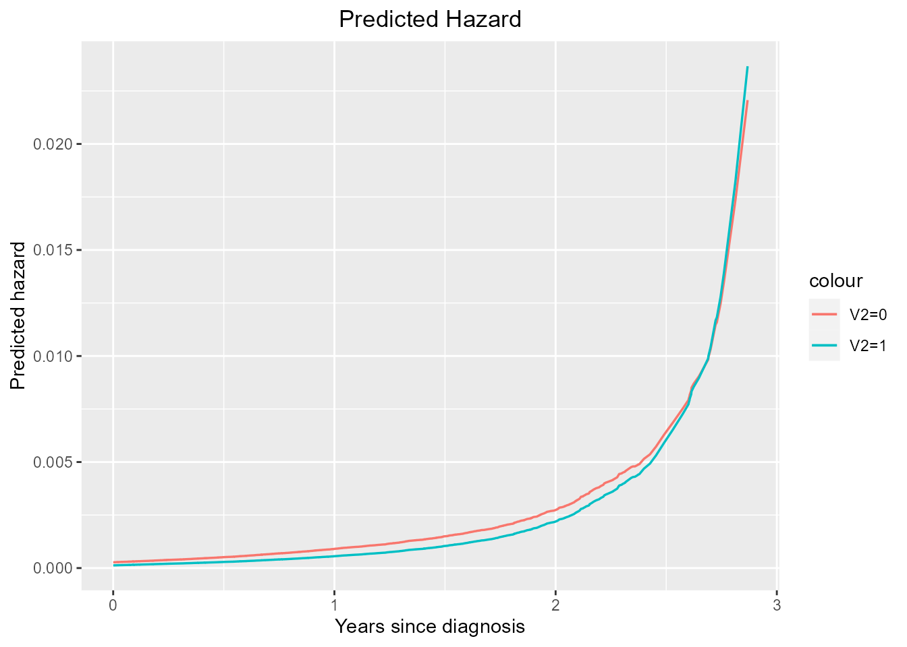
5.6.3 Prediction for certain time points
Also, we could specify the time points of output by define
out_seq. Following is an example:
Let’s check the output first:
predict_seq=coxtp.predict(model_result,baseline,newdata=data_predict,strata = F,out_seq=seq(0,3,by=0.5))
predict_seq
#> unique.time. lambda0_exp_betax
#> 1 0.0 0.0006728946
#> 2 0.5 0.0015034094
#> 3 1.0 0.0028342667
#> 4 1.5 0.0050570834
#> 5 2.0 0.0100623208
#> 6 2.5 0.0259174910
#> 7 3.0 0.1464175450Instead of outputing all the data points, the
coxtp.predict will only output the time points that has
been specified. Next, we are going to see if there is any difference
between the one with default output and the one with specified time
points:
predict_seq=coxtp.predict(model_result,baseline,newdata=data_predict,strata = F,out_seq=seq(0,3,by=0.1))
plot_or=ggplot(predict,aes(x=unique.time.,y=lambda0_exp_betax)) +
geom_line(size = 0.6) +
scale_x_continuous(name='Years since diagnosis') +
scale_y_continuous(name='Predicted hazard') +
ggtitle("Without specify out_seq") +
theme(plot.title = element_text(hjust = 0.5))
plot_seq=ggplot(predict_seq,aes(x=unique.time.,y=lambda0_exp_betax)) +
geom_line(size = 0.6) +
scale_x_continuous(name='Years since diagnosis') +
scale_y_continuous(name='Predicted hazard') +
ggtitle("With specify out_seq") +
theme(plot.title = element_text(hjust = 0.5))
plot_grid(plot_or,plot_seq,ncol = 2)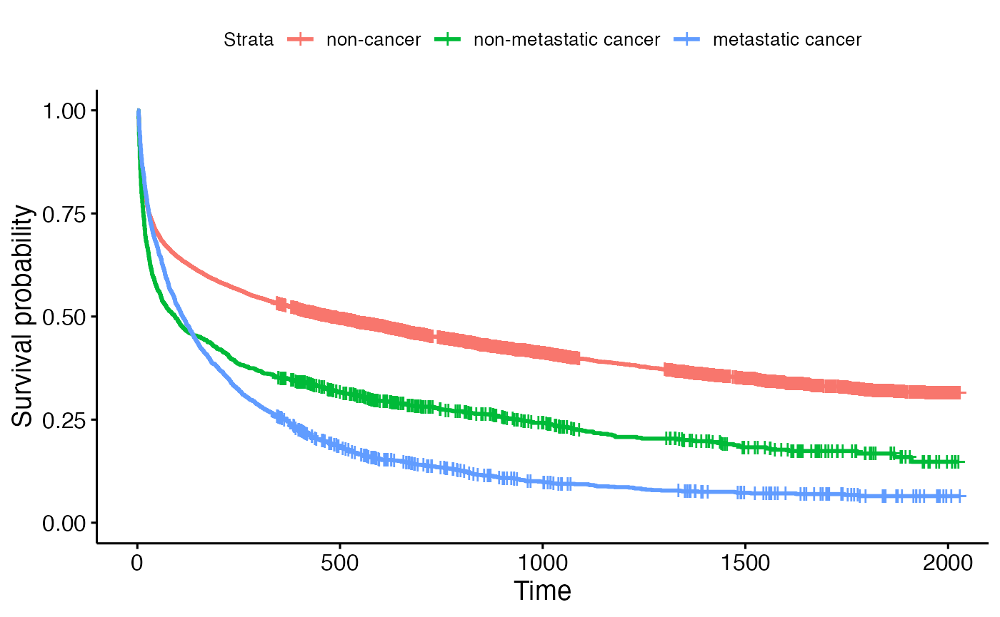 From the result above, we could notice that only the function smoothness looks different.
5.6.3 Prediction with stratification
For data with stratification, just define that
strata=T(Default is FALSE):(Again, suppose we already have
the best tuning parameter lambda selected)
event_stra=sim_data_p5_f5[,"event"]
time_stra=sim_data_p5_f5[,"time"]
data_stra=sim_data_p5_f5[,!colnames(sim_data_p5_f5) %in% c("event","time","facility")]
facility=sim_data_p5_f5[,"facility"]
#select best lambda
lambda_spline=1000
fit_stra<-coxtp(event=event_stra,z=data_stra,time=time_stra,strata =facility,lambda_spline=lambda_spline)
model_result = fit_stra$model_result
baseline_strata=coxtp.baseline(fit=model_result, delta=event_stra,z=data_stra,time=time_stra,strata = facility)
data_predict=c(1,1,0,0,0)
predict=coxtp.predict(model_result,baseline_strata,newdata=data_predict,strata = T)Again, we could plot the result by ggplot:
ggplot(predict,aes(x=unique.time.,y=lambda0_exp_betax)) +
geom_line(aes(color=strata,group=strata),size = 0.6) +
scale_x_continuous(name='Years since diagnosis') +
scale_y_continuous(name='Predicted hazard') +
ggtitle("Predicted Hazard") +
theme(plot.title = element_text(hjust = 0.5))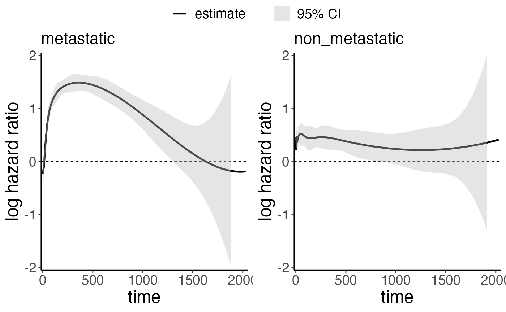
6. Model performance
6.1 Internal comparison
6.6.1 Accurancy:
For the non-penalized method, the estimation is largely depended on
the number of knots chosen in the B-Spline base function. The example
shown above is using the default knots, which is nspline=8.
However, the estimation could be largely different if we choose other
knots. Following is the code showing the performance of the estimation
when choosing different knots:
Following is the code showing the performance of the estimation when choosing different knots:
sim_data=surtvep::sim_data
event=sim_data[,"event"]
time=sim_data[,"time"]
data=sim_data[,!colnames(sim_data) %in% c("event","time")]
knot_list=c(6,8,10,20)
labels=paste0("Knots=",knot_list)
x=seq(0,3,length.out=sum(event==1))
y=1
for(knot in knot_list){
fit<-coxtp(event=event,z=data,time=time,nspline=knot)
plot<-coxtp.plot(fit,coef="V1",ylab="HR(log-scale)") +
theme(text = element_text(size = 10),
axis.text.x = element_text(size = 8),
axis.text.y=element_text(size = 8)) +
ggtitle("") + geom_line(aes(x=x,y=y))
plot
assign(paste0("plot",knot),plot)
}
library(cowplot)
title <- ggdraw() +
draw_label(
"Non-penalized NR",
fontface = 'bold',
x = 0,
hjust = 0,
size=15
) +
theme(
plot.margin = margin(0, 0, 0, 7)
)For the result above, the red line and shadow refer to the estimated function and 95%CI while the black line refers to the true function which is time-fixed(y=1). From the result above, we noticed that as the knots increase, the estimation becomes more and more inaccurate. This is happening because as the number of knots increases, the variance in the data was mistakenly captured as its influence. This makes the number of knots of selection in the non-penalized model very important.
While for penalized model, since we have penalized term, the number
of knots didn’t matters much, instead, the \(\lambda\) is more important. Following plot
is the performance of estimation when we use the lambda_spline selected
before, which is lambda_spline= 1000
knot_list=c(6,8,10,20)
labels=paste0("Knots=",knot_list)
x=seq(0,3,length.out=sum(event==1))
y=1
for(knot in knot_list){
fit<-coxtp(event=event,z=data,time=time,nspline=knot,lambda_spline = 1000)
plot<-coxtp.plot(fit,coef="V1",ylab="HR(log-scale)") +
theme(text = element_text(size = 10),
axis.text.x = element_text(size = 8),
axis.text.y=element_text(size = 8)) +
ggtitle("") +
geom_line(aes(x=x,y=y))
plot
assign(paste0("plot",knot),plot)
}
library(cowplot)
title <- ggdraw() +
draw_label(
paste0("Penalized NR,lambda=",1000),
fontface = 'bold',
x = 0,
hjust = 0,
size=15
) +
theme(
plot.margin = margin(0, 0, 0, 7)
)
p1=plot_grid(plot6,plot8,plot10,plot20,ncol=2,labels=c(labels),label_size = 13)
p1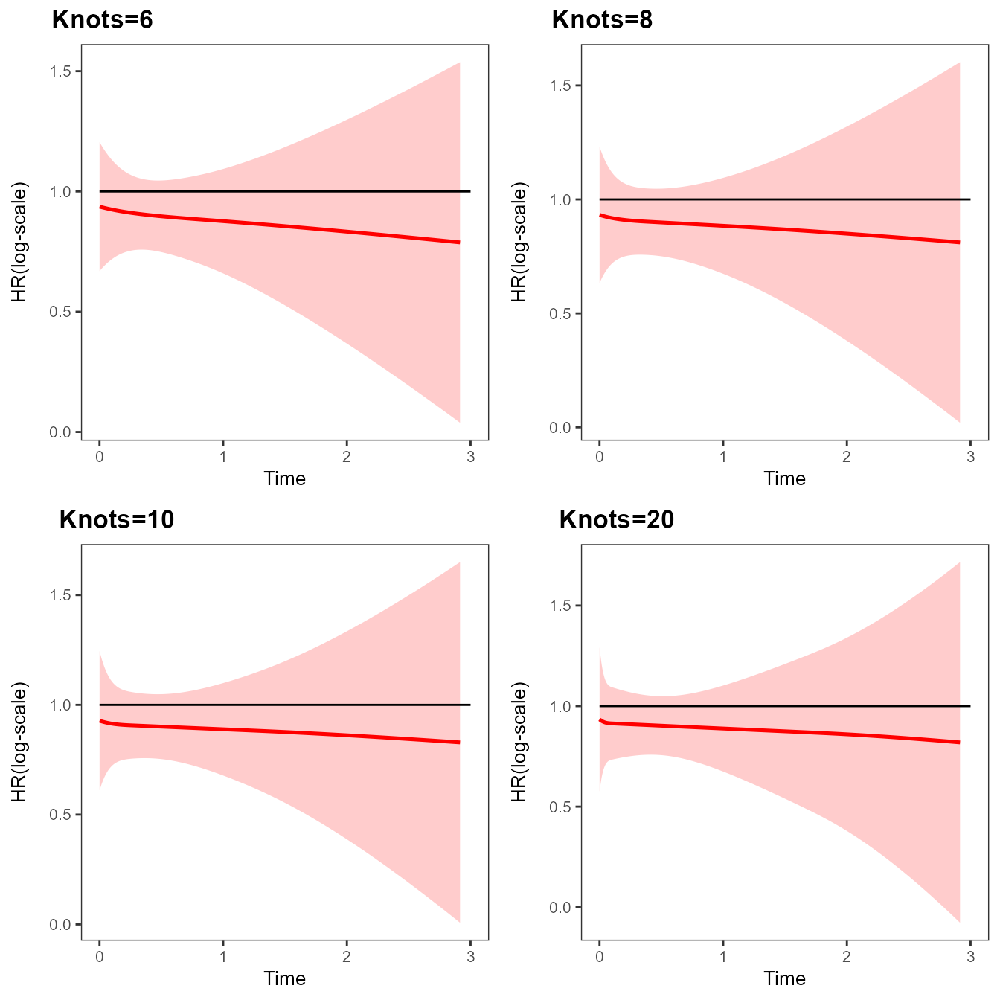
From the plot above, we could observe that with different knots
selected, the performance is not different so much for different knots,
all the estimates are relatively close to the real function. However, in
the penalized model, the lambda is more important which is another
reason that we need to select the best lambda before actually fitting
the model. The following plot is the performance of different lambda
selected. For the following plot, the knot was set as default, which is
knot=8.
lambda_spline_all=c(0.001,0.01,0.1,1,10,100)
labels=paste0("lambda=",lambda_spline_all)
i=1
x=seq(0,3,length.out=sum(event==1))
y=1
for(lambda in lambda_spline_all){
fit<-coxtp(event=event,z=data,time=time,lambda_spline = lambda)
plot<-coxtp.plot(fit,coef="V1",ylab="HR(log-scale)") +
theme(text = element_text(size = 10),
axis.text.x = element_text(size = 8),
axis.text.y=element_text(size = 8)) +
ggtitle("") +
geom_line(aes(x=x,y=y))
plot
assign(paste0("plot",i),plot)
i=i+1
}
library(cowplot)
title <- ggdraw() +
draw_label(
paste0("Penalized NR,knot=",8),
fontface = 'bold',
x = 0,
hjust = 0,
size=15
) +
theme(
plot.margin = margin(0, 0, 0, 7)
)
p1=plot_grid(plot1,plot2,plot3,plot4,plot5,plot6,ncol=2,labels=labels,label_size = 13)
p1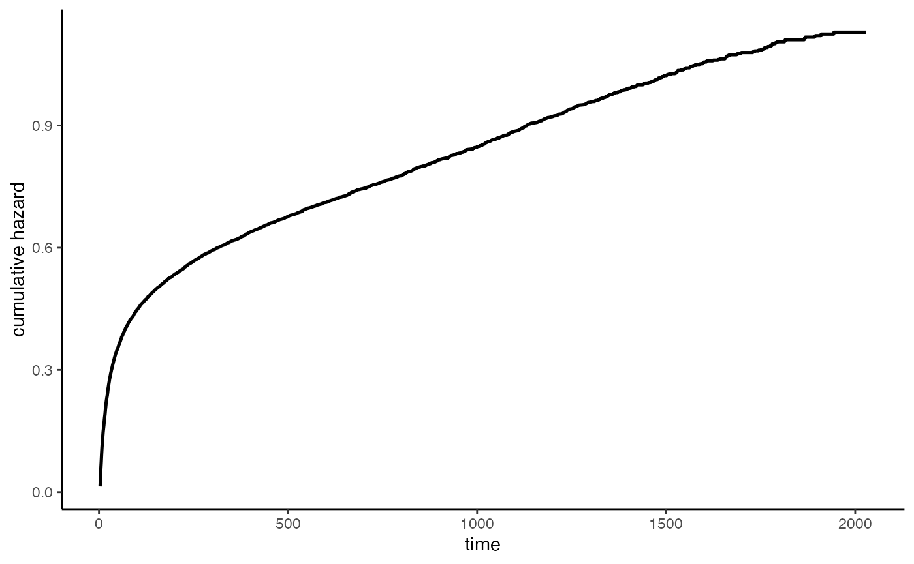 As a result, as the lambda increase, the estimated function is more related to the true function. This is happening because that the true function is time-fixed function, thus, as the lambda increase, the real function tends to shrink to the fixed function.
6.1.2 Efficacy
Next, we are going to compare the Efficacy of different methods. The
main function we used to eliminate computation time by parallel. For the
function, the default setting for parallel is
parallel=FALSE. For parallel computation, we also need to
define threads, which refers to the number of cores of the
computer. Here we set thread=4. The following code and plot
is to use to compare parallel and non-parallel time for different sample
size:
library(stringi)
library(stringr)
library(dplyr)
samplesize_list=c(1000,2000,3000,4000,5000)
i=1
for(samplesize in samplesize_list){
print(i)
sim_data_sub=sim_data[1:samplesize,]
event_sub=sim_data_sub[,"event"]
time_sub=sim_data_sub[,"time"]
data_sub=sim_data_sub[,!colnames(sim_data_sub) %in% c("event","time")]
non_parallel=bench::mark(coxtp(event=event_sub,z=data_sub,time=time_sub,lambda_spline = 100))[,1:8]
parallel=bench::mark(coxtp(event=event_sub,z=data_sub,time=time_sub,lambda_spline = 100,parallel = T,threads = 4))[,1:8]
non_parallel[,1]=samplesize
parallel[,1]=samplesize
if(i!=1){
non_parallel_list=rbind(non_parallel_list,non_parallel)
parallel_list=rbind(parallel_list,parallel)
} else {
non_parallel_list=non_parallel
parallel_list=parallel
}
i=i+1
}
#> [1] 1
#> [1] 2
#> Warning: Some expressions had a GC in every iteration; so filtering is disabled.
#> [1] 3
#> Warning: Some expressions had a GC in every iteration; so filtering is disabled.
#> Warning: Some expressions had a GC in every iteration; so filtering is disabled.
#> [1] 4
#> Warning: Some expressions had a GC in every iteration; so filtering is disabled.
#> Warning: Some expressions had a GC in every iteration; so filtering is disabled.
#> [1] 5
#> Warning: Some expressions had a GC in every iteration; so filtering is disabled.
#> Warning: Some expressions had a GC in every iteration; so filtering is disabled.
parallel_list$parallel="Parallel"
non_parallel_list$parallel="None-Parallel"
time_data=rbind(parallel_list,non_parallel_list) %>%
mutate(median_time=str_remove(median,"s"),
median_time=str_remove(median_time,"m"),
median_time=as.numeric(median_time),
median_time=ifelse(str_detect(median,"ms"),median_time/1000,median_time)) %>%
rename(samplesize=expression)
#Plot Time used:
ggplot(time_data,aes(x=samplesize,y=median_time,group=parallel)) +
geom_point(aes(color=parallel)) +
geom_line(aes(color=parallel)) +
labs(x="Sample Size",y="Seconds",title="Internal Computation time Comparison")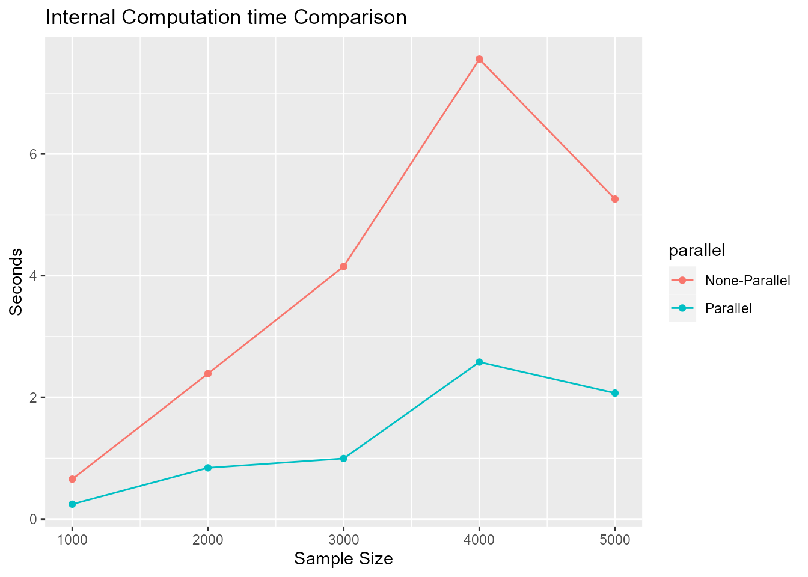
7. Simulation
In this section, we will generate our model prediction to large dataset and illustrate how to do simulation based on our package
To start with, we first divided our dataset into training and testing dataset:
sim_data=sim_data_p5
#Generate ID for sampling
sim_data=cbind(sim_data,c(1:nrow(sim_data)))
train_id=sample(c(1:nrow(sim_data)),2000,replace=F)
train_data=sim_data[sim_data[,8] %in% train_id, ]
test_data=sim_data[!sim_data[,8] %in% train_id, ]
#Remove ID
train_data=train_data[,1:7]
test_data=test_data[,1:7]Next, we are going to build the model using the training data. The step is similar as we have shown in previous step
event=train_data[,"event"]
time=train_data[,"time"]
data=train_data[,!colnames(train_data) %in% c("event","time")]
lambda_spline_all=c(0.001,0.01,0.1,1,10,100,1000)
fit_penalized <- coxtp(event = event, z = data, time = time,lambda_spline=lambda_spline_all)
fit_penalized$lambda.selected
#> value
#> AIC 10
#> TIC 10
#> GIC 10From the result above, we noticed that the lambda.selected is 1.
Next, we are going to predict the model using the test_data. Here we are
going to treat the test_data as a whole new population data
and want to predict the event probability by time.
From previous illustration, we know that the function
cox.predict could generate absolute hazard for one
individual during the time period.